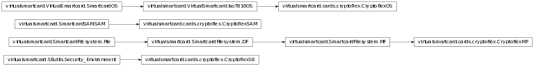

Bases: virtualsmartcard.SmartcardFilesystem.MF
Returns the file specified by ‘p1’ and ‘data’ from the select file command APDU.
Appends ‘file’ to the content of the DF.
Function for instruction 0xe2. Takes the parameter bytes ‘p1’, ‘p2’ as integers and ‘data’ as binary string.
| Returns: | the status bytes as two byte long integer and the response data as binary string. |
|---|
Only a template, will raise an error.
list of (tag, length, value)-tuples of BER-TLV coded data objects (encrypted)
list of files of the DF
Function for instruction 0xe0. Takes the parameter bytes ‘p1’, ‘p2’ as integers and ‘data’ as binary string.
| Returns: | the status bytes as two byte long integer and the response data as binary string. |
|---|
the currently selected file
Returns the current DF.
Returns the current EF or None if not available.
unknown
Decodes ‘p1’, ‘p2’ and ‘data’ from a data object handling command (i. e. get/put data) with odd instruction code.
| Returns: | the specified file, True if the following list regards SIMPLE-TLV data objects False otherwise and a list of (tag, length, value)-tuples. |
|---|
Decodes ‘p1’, ‘p2’ and ‘data’ from a data object handling command (i. e. get/put data) with even instruction code.
| Returns: | the specified file, True if the following list regards SIMPLE-TLV data objects False otherwise and a list of (tag, length, value)-tuples. |
|---|
Decodes ‘p1’, ‘p2’ and ‘data’ from a data unit command (i. e. read/write/update/search/erase binary) with odd instruction code.
Function for instruction 0xe4. Takes the parameter bytes ‘p1’, ‘p2’ as integers and ‘data’ as binary string.
| Returns: | the status bytes as two byte long integer and the response data as binary string. |
|---|
string with up to 16 bytes. DF name,which can also be used as applicationidentifier.
Returns a string of TLV-coded file control information of ‘file’. Note: The result is not prepended with tag and length for neither TCP, FMD nor FCI template.
Function for instruction 0x0f. Takes the parameter bytes ‘p1’, ‘p2’ as integers and ‘data’ as binary string.
| Returns: | the status bytes as two byte long integer and the response data as binary string. |
|---|
Function for instruction 0x0e. Takes the parameter bytes ‘p1’, ‘p2’ as integers and ‘data’ as binary string.
| Returns: | the status bytes as two byte long integer and the response data as binary string. |
|---|
Function for instruction 0x0c. Takes the parameter bytes ‘p1’, ‘p2’ as integers and ‘data’ as binary string.
| Returns: | the status bytes as two byte long integer and the response data as binary string. |
|---|
Only a template, will raise an error.
file identifier
file descriptor byte
string of length 1. The firstsoftware function table from thehistorical bytes.
Function for instruction 0xcb. Takes the parameter bytes ‘p1’, ‘p2’ as integers and ‘data’ as binary string.
| Returns: | the status bytes as two byte long integer and the response data as binary string. |
|---|
Function for instruction 0xca. Takes the parameter bytes ‘p1’, ‘p2’ as integers and ‘data’ as binary string.
| Returns: | the status bytes as two byte long integer and the response data as binary string. |
|---|
Returns a string of either the file’s BER-TLV or the file’s SIMPLE-TLV coded data objects depending on the bool ‘isSimpleTlv’. ‘requestedTL’ is a list of (tag, length)-tuples that specify which tags should be returned in what size.
Returns the path to this file beginning with the MF’s fid.
life cycle byte
Returns a byte according to the first software function table from the historical bytes of the card capabilities.
The second software function table from the historical bytes contains the data coding byte.
parent DF
Function for instruction 0xdb. Takes the parameter bytes ‘p1’, ‘p2’ as integers and ‘data’ as binary string.
| Returns: | the status bytes as two byte long integer and the response data as binary string. |
|---|
Function for instruction 0xda. Takes the parameter bytes ‘p1’, ‘p2’ as integers and ‘data’ as binary string.
| Returns: | the status bytes as two byte long integer and the response data as binary string. |
|---|
Sets either the file’s BER-TLV or the file’s SIMPLE-TLV coded data objects depending on the bool ‘isSimpleTlv’. ‘newtlvlist’ is a list of (tag, length, value)-tuples of new data.
Function for instruction 0xb1. Takes the parameter bytes ‘p1’, ‘p2’ as integers and ‘data’ as binary string.
| Returns: | the status bytes as two byte long integer and the response data as binary string. |
|---|
Function for instruction 0xb0. Takes the parameter bytes ‘p1’, ‘p2’ as integers and ‘data’ as binary string.
| Returns: | the status bytes as two byte long integer and the response data as binary string. |
|---|
Function for instruction 0xb3. Takes the parameter bytes ‘p1’, ‘p2’ as integers and ‘data’ as binary string.
| Returns: | the status bytes as two byte long integer and the response data as binary string. |
|---|
Function for instruction 0xb2. Takes the parameter bytes ‘p1’, ‘p2’ as integers and ‘data’ as binary string.
| Returns: | the status bytes as two byte long integer and the response data as binary string. |
|---|
Only a template, will raise an error.
Only a template, will raise an error.
Removes ‘file’ from the content of the DF
string of length 1. The secondsoftware function table from thehistorical bytes.
Returns the first file of the DF, that has the ‘attribute’ with the specified ‘value’. For partial DF name selection you must specify the first/last/next or previous occurence with ‘reference’ and the index of the current file ‘index_current’ (-1 for None).
Function for instruction 0xa4. Takes the parameter bytes ‘p1’, ‘p2’ as integers and ‘data’ as binary string. Returns the status bytes as two byte long integer and the response data as binary string.
list of (tag, length, value)-tuples of SIMPLE-TLV coded data objects (encrypted)
Function for instruction 0xd7. Takes the parameter bytes ‘p1’, ‘p2’ as integers and ‘data’ as binary string.
| Returns: | the status bytes as two byte long integer and the response data as binary string. |
|---|
Function for instruction 0xd6. Takes the parameter bytes ‘p1’, ‘p2’ as integers and ‘data’ as binary string.
| Returns: | the status bytes as two byte long integer and the response data as binary string. |
|---|
Function for instruction 0xdd. Takes the parameter bytes ‘p1’, ‘p2’ as integers and ‘data’ as binary string.
| Returns: | the status bytes as two byte long integer and the response data as binary string. |
|---|
Function for instruction 0xdc. Takes the parameter bytes ‘p1’, ‘p2’ as integers and ‘data’ as binary string.
| Returns: | the status bytes as two byte long integer and the response data as binary string. |
|---|
Only a template, will raise an error.
Only a template, will raise an error.
Function for instruction 0xd1. Takes the parameter bytes ‘p1’, ‘p2’ as integers and ‘data’ as binary string. Returns the status bytes as two byte long integer and the response data as binary string.
Function for instruction 0xd0. Takes the parameter bytes ‘p1’, ‘p2’ as integers and ‘data’ as binary string.
| Returns: | the status bytes as two byte long integer and the response data as binary string. |
|---|
Function for instruction 0xd2. Takes the parameter bytes ‘p1’, ‘p2’ as integers and ‘data’ as binary string.
| Returns: | the status bytes as two byte long integer and the response data as binary string. |
|---|
Only a template, will raise an error.
Only a template, will raise an error.
Bases: virtualsmartcard.VirtualSmartcard.Iso7816OS
secure access module
Calculate Answer to Reset (ATR) and returns the bitstring.
- directConvention (bool): Whether to use direct convention or
inverse convention.
- TAi, TBi, TCi (optional): Value between 0 and 0xff. Interface
Characters (for meaning see ISO 7816-3). Note that if no transmission protocol is given, it is automatically selected with T=max{j-1|TAj in args OR TBj in args OR TCj in args}.
- T (optional): Value between 0 and 15. Transmission Protocol.
Note that if T is set, TAi/TBi/TCi for i>T are omitted.
- histChars (optional): Bitstring with 0 <= len(histChars) <= 15.
Historical Characters T1 to T15 (for meaning see ISO 7816-4).
T0, TDi and TCK are automatically calculated.
Returns a byte according to the third software function table from the historical bytes of the card capabilities.
master file
Powers down the card
Bases: virtualsmartcard.SmartcardSAM.SAM
Decrypt the given data, using the parameters stored in the SAM. Right now we do not encrypt the data. In memory encryption might or might not be added in a future version.
Encrypt the given data, using the parameters stored in the SAM. Right now we do not encrypt the data. In memory encryption might or might not be added in a future version.
This method returns the key specified by the p2 parameter. The key may be stored on the cards filesystem.
| Parameters: |
|
|---|
Change the specified referenced data (e.g. CHV) of the card
Erases a Security Environment stored under SEID from the SAM
Authenticate the terminal to the card. Check whether Terminal correctly encrypted the given challenge or not
Generate a random number of maximum 8 Byte and return it.
Takes an encrypted challenge in the form ‘Terminal Challenge | Card Challenge | Card number’ and checks it for validity. If the challenge is successful the card encrypts ‘Card Challenge | Terminal challenge’ and returns this value
Parse a command APDU protected by Secure Messaging and return the unprotected command APDU
In the cryptoflex card, this is the verify key command. A key is send to the card in plain text and compared to a key stored in the card. This is used for authentication
| Parameters: | data – Contains the key to be verified |
|---|---|
| Returns: | SW[NORMAL] in case of success otherwise SW[WARN_NOINFO63] |
Protect a plain response APDU by Secure Messaging
Restores a Security Environment from the SAM and replaces the current SE with it.
Setter function for the internal reference to the Filesystem. The SAM needs a reference to the filesystem in order to store/retrieve keys.
| Parameters: |
|
|---|
Stores the current Security environment in the secure access module. The SEID is used as a reference to identify the SE.
Authenticate the card user. Check if he entered a valid PIN. If the PIN is invalid decrement retry counter. If retry counter equals zero, block the card until reset with correct PUK
Bases: virtualsmartcard.SEutils.Security_Environment
Manipulate the current Security Environment. P2 is the tag of a control reference template, data contains control reference objects
Compute a cryptographic checksum (e.g. MAC) for the given data. Algorithm and key are specified in the current SE
Compute a digital signature for the given data. Algorithm and key are specified in the current SE
| Parameters: |
|
|---|
Decipher data using key, algorithm, IV and Padding specified by the current Security environment.
| Returns: | raw data (no TLV coding). Padding is not removed!!! |
|---|
Encipher data using key, algorithm, IV and Padding specified by the current Security environment.
| Returns: | raw data (no TLV coding). |
|---|
In the Cryptoflex card this command only supports RSA keys.
| Parameters: |
|
|---|
Hash the given data using the algorithm specified by the current Security environment.
| Returns: | raw data (no TLV coding). |
|---|
This method is used to store, restore or erase Security Environments or to manipulate the various parameters of the current SE. P1 specifies the operation to perform, p2 is either the SEID for the referred SE or the tag of a control reference template
| Parameters: | p1 – Bitmask according to this table
|
|---|
This methods parses a data field including Secure Messaging objects. SM_header indicates whether or not the header of the message shall be authenticated. It returns an unprotected command APDU
| Parameters: |
|
|---|---|
| Returns: | Unprotected command APDU |
In the end this command is nothing but a big switch for all the other commands in ISO 7816-8. It will invoke the appropriate command and return its result
This method protects a response APDU using secure messaging mechanisms
| Returns: | the protected data and the SW bytes |
|---|
Verify a certificate send by the terminal using the internal trust anchors. This method is currently not implemented.
Verify the cryptographic checksum contained in the data field. Data field must contain a cryptographic checksum (tag 0x8E) and a plain value (tag 0x80)
Verify the digital signature contained in the data field. Data must contain a data to sign (tag 0x9A, 0xAC or 0xBC) and a digital signature (0x9E)